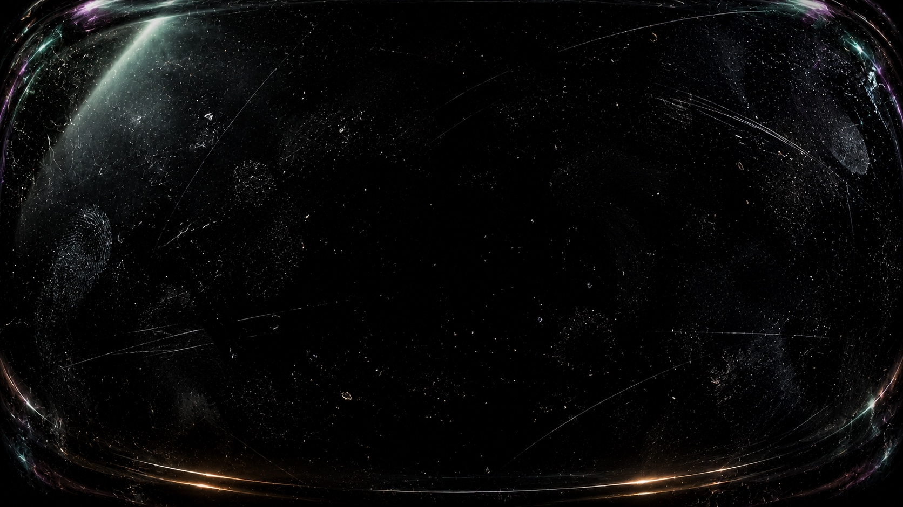
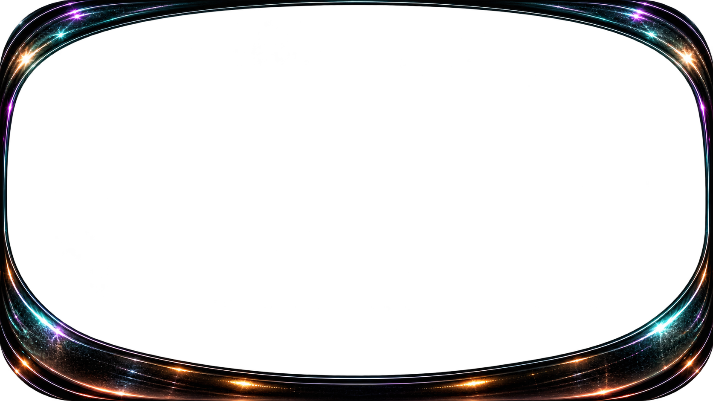

MOSS
DJ and producer. Transmission soon. Contact: mail@ivolopes.com
LAT
23.9°
LON
146.7°
DIST
1.8 AU
FIELD 28 mm
F / 1.4
ISO 800
MOSS
DJ · PRODUCER
TRANSMISSION · SOON
MAIL@IVOLOPES.COM
BLOOM 01 · CERAMIC
SPECIMEN A
ORIGIN UNKNOWN
MOSS · COVERAGE 100%
SYMBIOTIC GROWTH
STABLE
AUDIO
LIVE FEED
STABLE
SPECIMEN
BIOSCAN
V.1.0
| 124 BPM